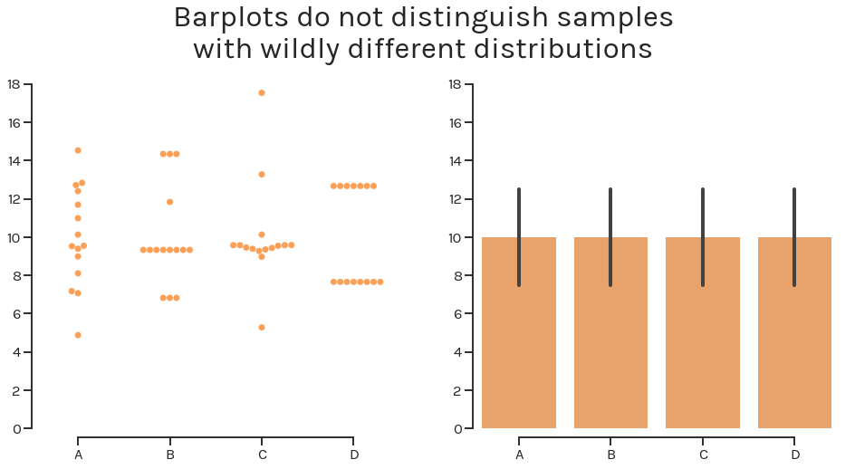
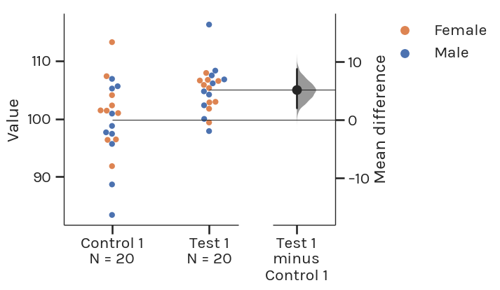
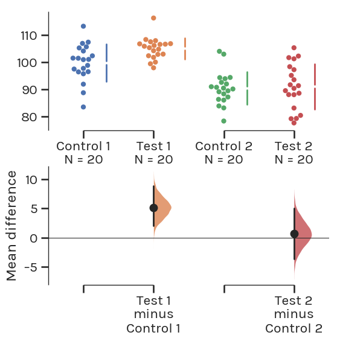

Robust and Beautiful Statistical Visualization
Current plots do not work
What is data visualization? Battle-Baptiste and Rusert (2018) give a cogent and compelling definition:
Data visualization[1] is the rendering of information in a visual format to help communicate data while also generating new patterns and knowledge through the act of visualization itself.
Sadly, too many figures and visualizations in modern academic publications seemingly fail to “generate new patterns and knowledge through the act of visualization itself”. Here, we propose a solution: the estimation plot.
The barplot conceals the underlying shape
By only displaying the mean and standard deviation, barplots do not accurately represent the underlying distribution of the data.

In the above figure, four different samples with wildly different distributions–as seen in the swarmplot on the left panel–look exactly the same when visualized with a barplot on the right panel. (You can download the dataset to see for yourself.)
We’re not the first ones (see these articles: article 1, article 2, or article 3) to point out the barplot’s fatal flaws. Indeed, it is both sobering and fascinating to realise that the barplot is a 17th century invention initially used to compare single values, not to compare summarized and aggregated data.
The boxplot does not convey sample size
Boxplots are another widely used visualization tool. They arguably do include more information for each sample (medians, quartiles, maxima, minima, and outliers), but they do not convey to the viewer the size of each sample.
The figure above visualizes the same four samples as a swarmplot (left panel) and as a boxplot. If we did not label the x-axis with the sample size, it would be impossible to definitively distinguish the sample with 5 observations from the sample with 50.
Even if the world gets rid of barplots and boxplots, the problems plaguing statistical practices will remain unsolved. Null-hypothesis significance testing–the dominant statistical paradigm in basic research–does not indicate the effect size, or its confidence interval.
Introducing the Estimation Plot
This is a Gardner-Altman estimation plot. The plot draws its name from Martin J. Gardner and Douglas Altman, who are credited with creating the design in 1986.
This plot has two key features:
It presents all data points as a swarmplot, ordering each point to display the underlying distribution.
It presents the effect size as a bootstrap 95% confidence interval (95% CI) on a separate but aligned axis. The effect size is displayed to the right of the raw data, and the mean of the test group is aligned with the effect size.”
An estimation plot obtains and displays the 95% CI through nonparametric bootstrap resampling. This enables visualization of the confidence interval as a graded sampling distribution.
This is one important difference between estimation plots created by DABEST, and the original Gardner-Altman design. Here, the 95% CI is computed through parametric methods, and displayed as a vertical error bar.
Read more about this technique at bootstraps.
Introducing Estimation Statistics
Estimation plots emerge from estimation statistics, a simple framework that avoids the pitfalls of significance testing. It focuses on the effect sizes of one’s experiment/interventions, and uses familiar statistical concepts: means, mean differences, and error bars.
Significance testing calculates the probability (the P value) that the experimental data would be observed, if the intervention did not produce a change in the metric measured (i.e. the null hypothesis). This leads analysts to apply a false dichotomy on the experimental intervention.
Estimation statistics, on the other hand, focuses on the magnitude of the effect (the effect size) and its precision. This encourages analysts to gain a deeper understanding of the metrics used, and how they relate to the natural processes being studied.
An Estimation Plot For Every Experimental Design
For each of the most routine significance tests, there is an estimation replacement:
Unpaired Student’s t-test –> Two-group estimation plot

Paired Student’s t-test –> Paired estimation plot
The Gardner-Altman estimation plot can also display effect sizes for repeated measures (aka a paired experimental design) using a Tufte slopegraph instead of a swarmplot.
One-way ANOVA + multiple comparisons –> Multi two-group estimation plot
For comparisons between three or more groups that typically employ analysis of variance (ANOVA) methods, one can use the Cumming estimation plot, named after Geoff Cumming, and draws its design heavily from his 2012 textbook “Understanding the New Statistics”. This estimation plot design can be considered a variant of the Gardner-Altman plot.

The effect size and 95% CIs are still plotted on a separate axis, but unlike the Gardner-Altman plot, this axis is positioned beneath the raw data.
Such a design frees up visual space in the upper panel, allowing the display of summary measurements (mean ± standard deviation) for each group. These are shown as gapped lines to the right of each group. The mean of each group is indicated as a gap in the line, adhering to Edward Tufte’s dictum to keep the data-ink ratio low.
Repeated measures ANOVA –> Multi paired estimation plot
Estimation Plots: The Way Forward
In summary, estimation plots offer five key benefits relative to conventional plots:
| Barplot | Boxplot | Estimation Plot | |
|---|---|---|---|
| Displays all observed values | NO | NO | Yes |
| Avoids false dichotomy | NO | NO | Yes |
| Focusses on effect size | NO | NO | Yes |
| Visualizes effect size precision | NO | NO | Yes |
| Shows mean difference distribution | NO | NO | Yes |
You can create estimation plots using the DABEST (Data Analysis with Bootstrap Estimation) packages, which are available in Matlab, Python, and R.
[1]:W. E. B. Du Bois’s Data Portraits: Visualizing Black America. Edited by Whitney Battle-Baptiste and Britt Rusert, Princeton Architectural Press, 2018